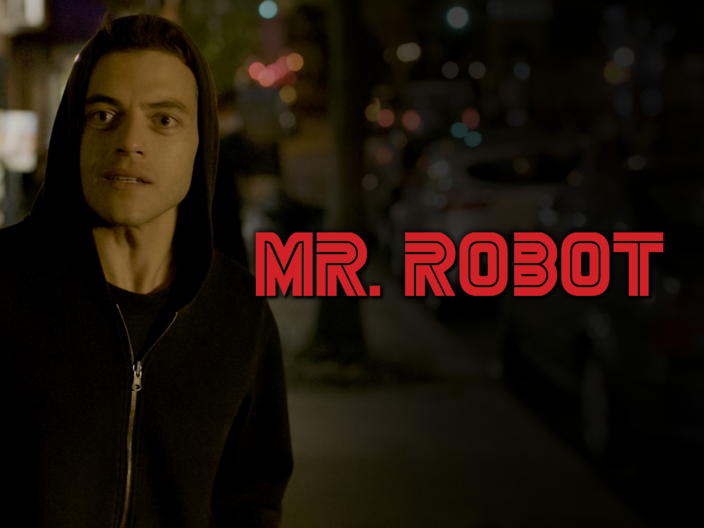

Séries
Mr.Robot - Por que você deve assistir
Mr. Robot apresenta uma narrativa intricada e repleta de reviravoltas, mantendo os espectadores à beira de seus assentos a cada episódio. Desde os mistérios envolvendo a misteriosa organização fsociety até as complexidades da mente de seu protagonista, Elliot Alderson, a série mantém um ritmo frenético que deixa os espectadores ávidos por mais.
Falando em Elliot Alderson, interpretado brilhantemente por Rami Malek, ele é apenas o ponto de partida para uma galeria de personagens complexos e cativantes. Cada personagem, desde o enigmático Mr. Robot até a ambígua Angela Moss, é habilmente desenvolvido ao longo da série, adicionando camadas de profundidade e significado à trama.
Uma das características mais marcantes de Dark é sua atmosfera sombria e visualmente impressionante. A cidade de Winden é retratada de maneira sinistra e atmosférica, criando um cenário perfeito para os eventos sobrenaturais que se desenrolam. A cinematografia e a trilha sonora contribuem para a sensação de suspense e inquietação que permeia toda a série.
Mr. Robot não tem medo de mergulhar de cabeça em questões sociais, políticas e tecnológicas profundas. Desde a crítica ao sistema financeiro até a exploração das consequências da vigilância em massa, a série aborda temas relevantes e oportunos que ressoam com o público moderno.
Além de sua narrativa envolvente, Mr. Robot é uma obra-prima visual. A direção inventiva e a cinematografia marcante contribuem para uma experiência cinematográfica que é ao mesmo tempo estilizada e visceral. Cada cena é meticulosamente planejada para criar um impacto visual duradouro.
Por fim, Mr. Robot é muito mais do que apenas uma série sobre hackers e tecnologia. É uma reflexão profunda sobre a condição humana, sobre alienação, solidão e a busca por significado em um mundo cada vez mais conectado e desumanizado. É uma série que desafia as expectativas e convida os espectadores a questionarem o próprio mundo ao seu redor.
Novidades da semana